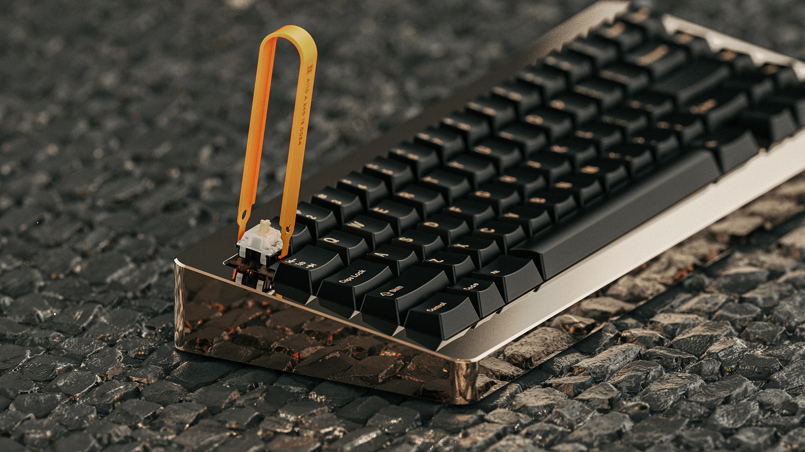
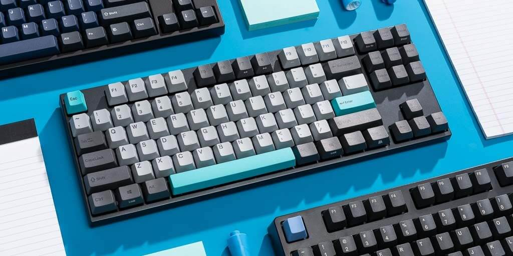
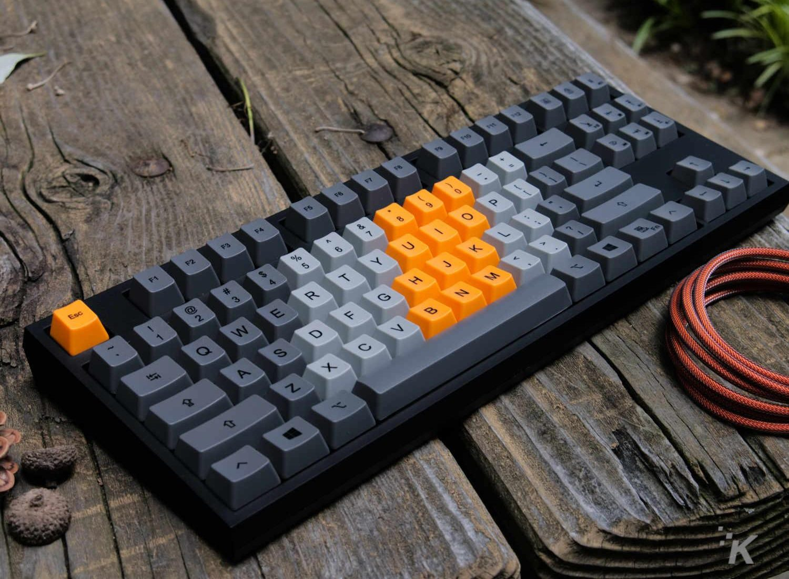

Keyborders
A mechanical keyboard is built with high quality, typically spring activated key switches. These key switches vary based on the keyboard’s application or user preference.
Feel the difference.



Custom Designs
Mechanical keyboards raise the bar in every way. A mechanical keyboard’s switches, framing, functionality, type print methods, key construction, PCB board, LED lighting (sharpness, brightness, adjustability), and a slew of other features are far superior compared to traditional rubber dome keyboards. Most of these improvements boil down to one thing - feel. Mechanical keyboards simply feel better than rubber dome keyboards.